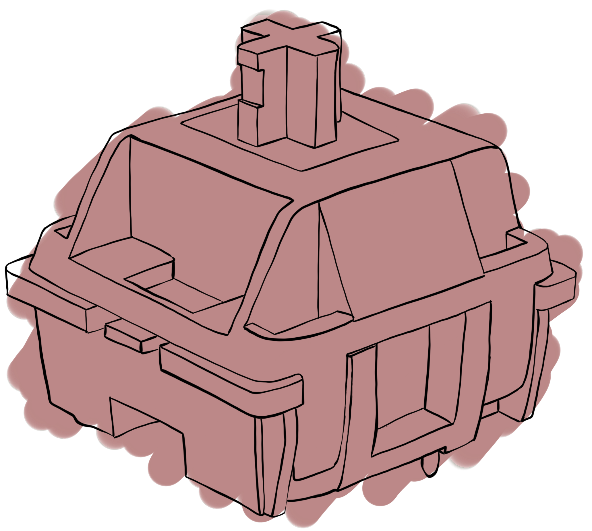
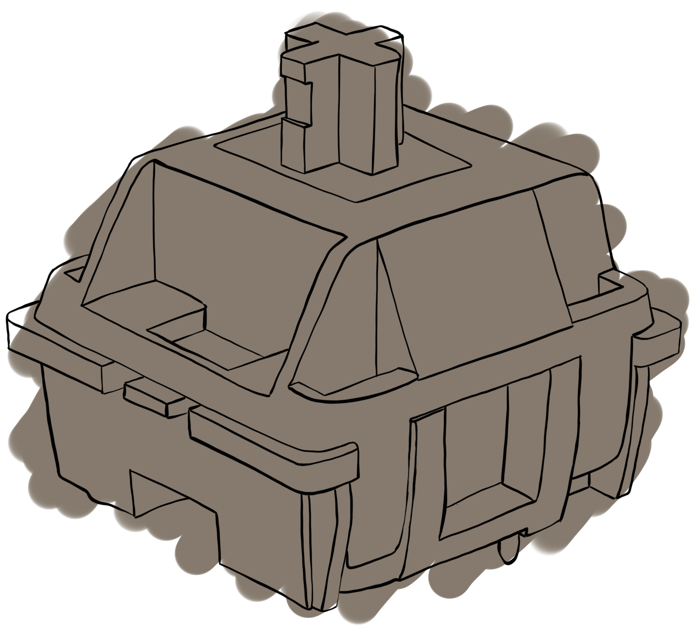
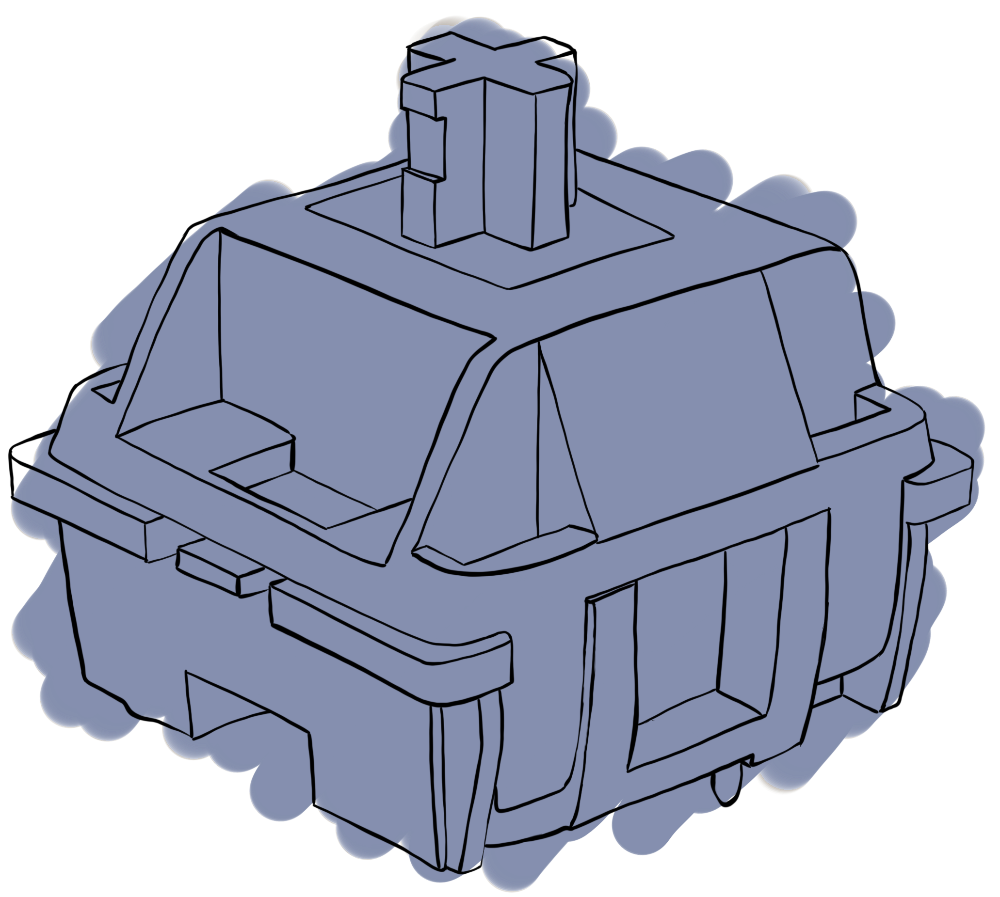

Switches
These are one of the main components responsible for the typing experience, and are usually coded by colour. There are three types of switches; linear, tactile, and clicky.
click on a switch to hear what it sounds like

Linear
These switches are usually red, and have no tactile bump, which makes for a smooth and consistent downward press. They’re also quieter than the other two options. These are ideal for gaming because it has no bump which can improve speed.

Tactile
These switches are usually brown, and have a tactile bump that requires slightly more force to overcome when pressing down. Many people find this bump to be satisfying. They’re good for most things, and might be preferred by typists over the linear switch.

Clicky
These switches usually blue, and are the loudest of the three, hence the name. It has a tactile bump and makes a click sound on every press. For reference, this is the type that most school computers use. It feels the same as a tactile switch, but louder. Some people like the click while others don’t, and the sound is the main reason to choose this over tactile. It all depends on personal preference, but it’s best not to get clicky switches for use in the office. It’s worth noting that the click can sometimes be audible through discord calls, so keep it in mind if you plan on gaming with friends.
Before buying switches, it’s best to get a switch tester to try them out.
For more detail about switches, visit this site